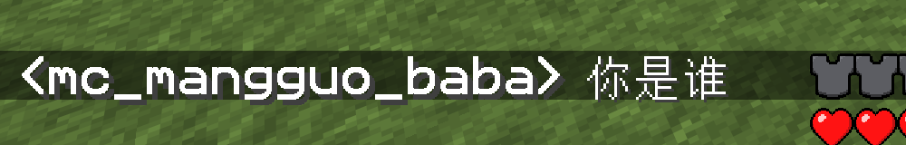
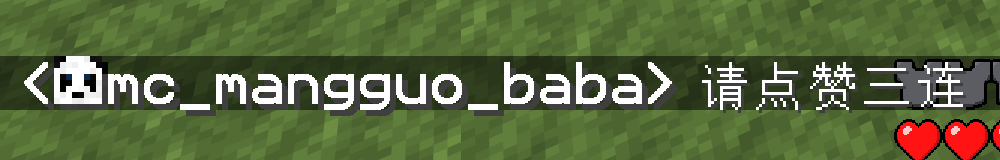
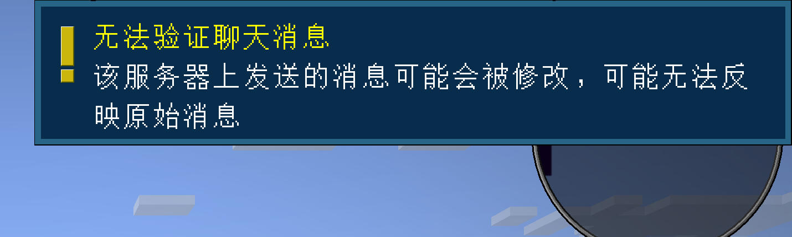
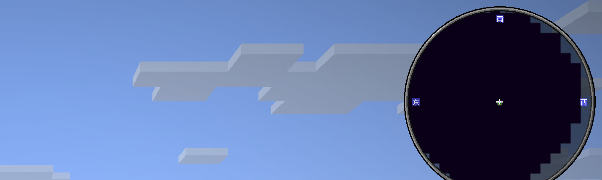

Chat Heads
在聊天消息旁显示发言玩家的皮肤头像。
本分类 MOD 总览
四个组件分别解决发言辨认、历史回看、聊天签名和玩家动作表达。
在聊天消息旁显示发言玩家的皮肤头像。
把聊天历史容量从 100 条提高到 16,384 条。
减少聊天消息携带的账号签名和举报关联。
用轮盘播放挥手、舞蹈和自定义玩家动作。
点击 开始介绍 进入下一页
CHAT HEADS · 1.2.4
在聊天消息旁显示玩家皮肤头像，让多人聊天不再只靠昵称辨认。


点击 下一页 继续
MORE CHAT HISTORY · 2.0.0
聊天或命令输出刷屏后，仍能回看更早的消息。
这是当前客户端的回看队列，不是永久日志，也不提供搜索和导出。
点击 下一页 继续
NO CHAT REPORTS · 2.20.1
在服务器允许时发送未签名消息，降低聊天内容与账号举报证据直接关联的可能。


点击 下一页 继续
EMOTECRAFT · 3.4.0-B.BUILD.161
挥手、舞蹈或播放自定义动画，用玩家动作补充文字和语音交流。
最后一页 · 可点击 回到第一页
← → 方向键也可切页